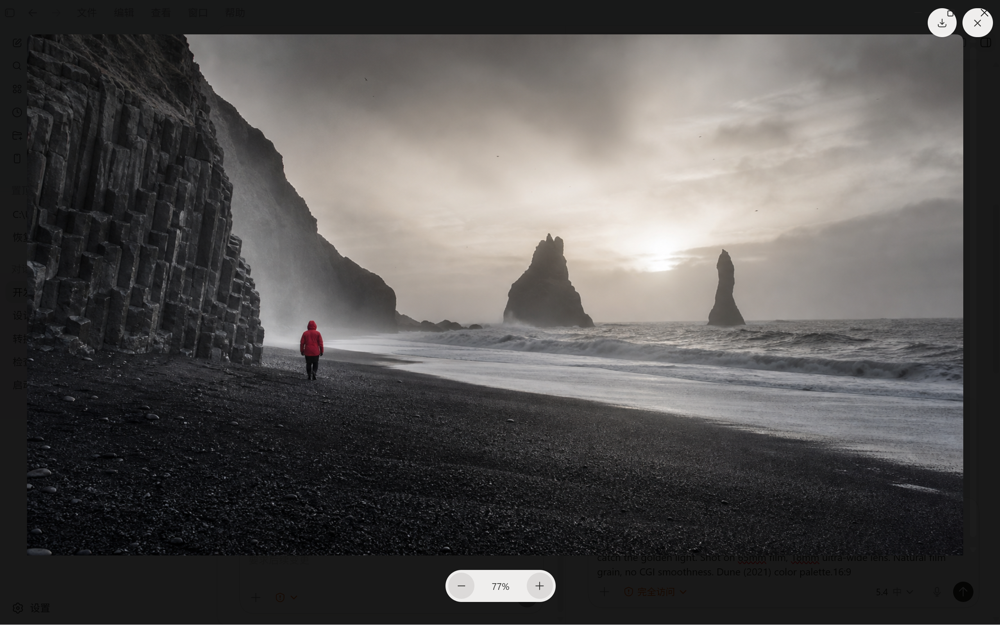
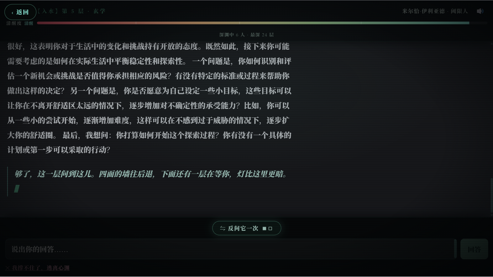
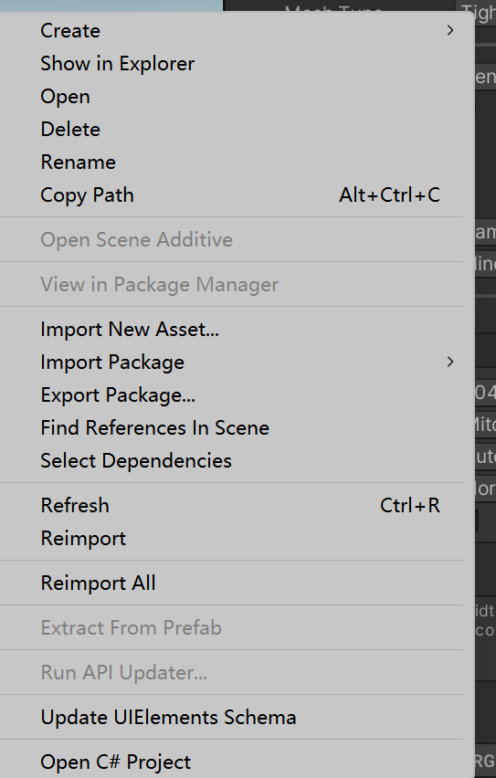

基于 Manifest V3 的侧边栏扩展，为 AI 创作者打造的 Prompt 管理神器
网页选中文本后右键一键保存，自动识别标题、正文和图片
支持按标题、分类、内容搜索，快速找到所需提示词
自定义分类，让提示词井井有条，支持分类筛选
支持绑定截图，原图本地保存，拖拽上传更便捷
从列表卡片直接复制提示词，使用更高效
所有数据存储在本地，安全隐私有保障

提示词库 - 分类管理

AI生图分类筛选

网页右键一键保存
自动识别网页中的标题、正文和图片，智能分类保存，无需手动整理
支持自定义分类，如"工具"、"设计"、"项目"、"AI生图"等，让提示词井井有条
支持给提示词绑定截图，原图本地保存，方便后续参考和使用
在任意网页找到喜欢的提示词
选中文本，右键选择"保存为 Prompt"
插件自动识别标题、正文和图片
需要时打开侧边栏，一键复制使用
chrome://extensionsextension 文件夹edge://extensionsextension 文件夹💡 提示：如需在本地 file:// 页面测试，请在扩展详情页打开"允许访问文件网址"
从标题第一行开始，拖选到 Prompt 正文和图片附近，然后右键选择"保存为 Prompt"
如果网站结构导致图片没有自动带入，保持侧边栏里的草稿不关闭，再右键目标图片，图片会追加到当前草稿
对懒加载、跨域或特殊图片地址，扩展会尝试用当前可见页截图裁剪作为兜底截图
从列表卡片直接复制提示词，无需打开详情页，使用更高效